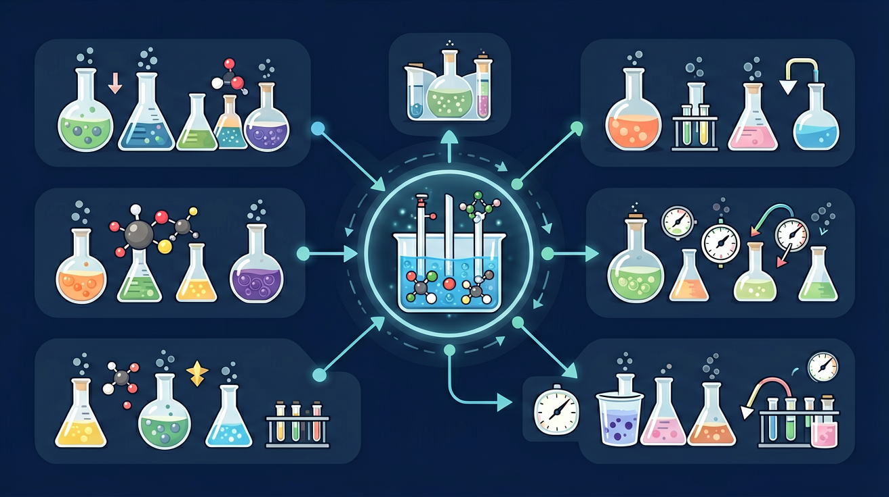

真实情境
铝制品阳极氧化处理车间
某铝制品厂采用电解法对铝材表面进行阳极氧化处理。工人将铝板浸入稀硫酸电解槽作为阳极，石墨作为阴极，接通12V直流电源后，铝板表面逐渐形成致密的氧化铝保护层。质检员发现不同电压下氧化层厚度差异明显。
已有经验
学生已掌握原电池原理、离子移动方向、氧化还原反应本质
真正卡点
混淆电解池与原电池的电子流向/电极反应本质
本课任务
分析电解过程中各极变化及电子转移
电解池中阴极发生？
某铝制品厂采用电解法对铝材表面进行阳极氧化处理。工人将铝板浸入稀硫酸电解槽作为阳极，石墨作为阴极，接通12V直流电源后，铝板表面逐渐形成致密的氧化铝保护层。质检员发现不同电压下氧化层厚度差异明显。
学生已掌握原电池原理、离子移动方向、氧化还原反应本质
混淆电解池与原电池的电子流向/电极反应本质
分析电解过程中各极变化及电子转移
电解池需要外接直流电源：与电源负极相连的是阴极（得电子、还原），与正极相连的是阳极（失电子、氧化）。这一点与原电池的正负极命名习惯不同，必须按“阴阳极=还原/氧化场所”来记，避免混用。离子放电顺序由放电难易决定，不能只按浓度大小武断判断。
电解池中，阴极发生的是？
为什么电解池的阴极发生还原、阳极发生氧化？
先选一个你关心的问题。后面的例子、提示和 AI 学伴都会围绕这个问题来帮你推进。
选择或输入后，本课会围绕你的问题展开。
建立宏观现象与微观粒子变化的联系，掌握用惰性电极电解不同水溶液的产物预测方法
铂电极电解0.1mol/L Na₂SO₄溶液：两极均产生无色气泡（H₂和O₂），溶液pH不变，证实水电离的H⁺和OH⁻放电
惰性电极电解水溶液分析流程：①列出全部离子②按放电顺序排除③考虑pH变化验证
错记放电顺序：误认为所有阴离子放电能力均弱于OH⁻，实际S²⁻、I⁻等还原性离子优先于OH⁻放电
课堂任务：请用“现象/文本/地图/实验数据 → 关键证据 → 学科解释 → 迁移应用”四步，重写一个关于「电解池：用外电源推动非自发反应」的新问题。
如果你能解释“为什么电解池的阴极发生还原、阳极发生氧化？”，这节课就真正过关了。
用惰性电极电解电解质水溶液时，阴极常在 H⁺（水）与金属阳离子之间选择较易得电子者；阳极常在 OH⁻（水）与酸根阴离子之间选择较易失电子者（注意复杂离子与电极材料例外）。写出产物后用总反应检查原子守恒，并说明溶液酸碱性如何变化。
惰性电极电解 CuSO₄ 溶液，阴极主要产物是？
原电池：自发反应→电能，负极氧化、正极还原，电子来自负极金属的氧化。电解池：外加电能→非自发反应，阳极氧化、阴极还原，电子由电源负极“泵”向阴极。同一套装置文字里若混用“正极/阳极”，先画电源与电极连接再写半反应。
关于电解池与原电池，正确的是？
电解是在外加电源作用下迫使电子转移的过程。阳极发生氧化，阴极发生还原。电解熔融盐与电解水溶液竞争放电顺序不同：水溶液中阴极常考虑 H⁺，阳极考虑 OH⁻ 或酸根（惰性电极时）。电镀时镀层金属作阳极，待镀金属作阴极。
阴极：氧化性较强的阳离子先得电子；阳极（惰性）：还原性较强的阴离子先失电子。活性阳极则电极本身可能被氧化。结合电子守恒算量。
常见误区：常见误区是把电解池阳极当成还原极，或忽略水的电离参与放电。
电解池中与电源正极相连的电极是？
本课任务：结合浓度模拟理解“离子浓度变化会改变溶液性质”；再设计电解 CuSO₄ 的预测表：阴极/阳极产物、颜色与酸碱性如何随通电时间变化，并用半反应解释。
写清自变量、因变量和至少两个保持不变的条件，避免同时改变多个因素后无法归因。
至少记录三组带单位的数据或三个可复查的现象，不用“变大了”“更明显”代替证据。
用本课公式、粒子模型或受力关系解释趋势，并指出结论成立所依赖的模型条件。
换一个参数或真实情境预测结果，再用仿真检验；若不一致，回查变量、单位和边界条件。

识别并写出本节核心定义、公式或分类标准。
把本课标准用于一个实验数据或真实生活场景。
设计一个反例，说明常见错误为什么站不住脚。
电解池把电能转化为化学能，用外加电压推动非自发氧化还原反应。
连接电源负极的一端富电子，阳离子或水在阴极得电子被还原。
连接电源正极的一端缺电子，阴离子或水在阳极失电子被氧化。
记忆锚点：电解池也记：阴还阳氧；但它靠外电源，不靠自发。
易错提醒：常见错误：把原电池和电解池的能量转化方向混淆。原电池化学能→电能，电解池电能→化学能。
不要只看结论。动手改变变量后，再用一句话解释画面为什么变了。